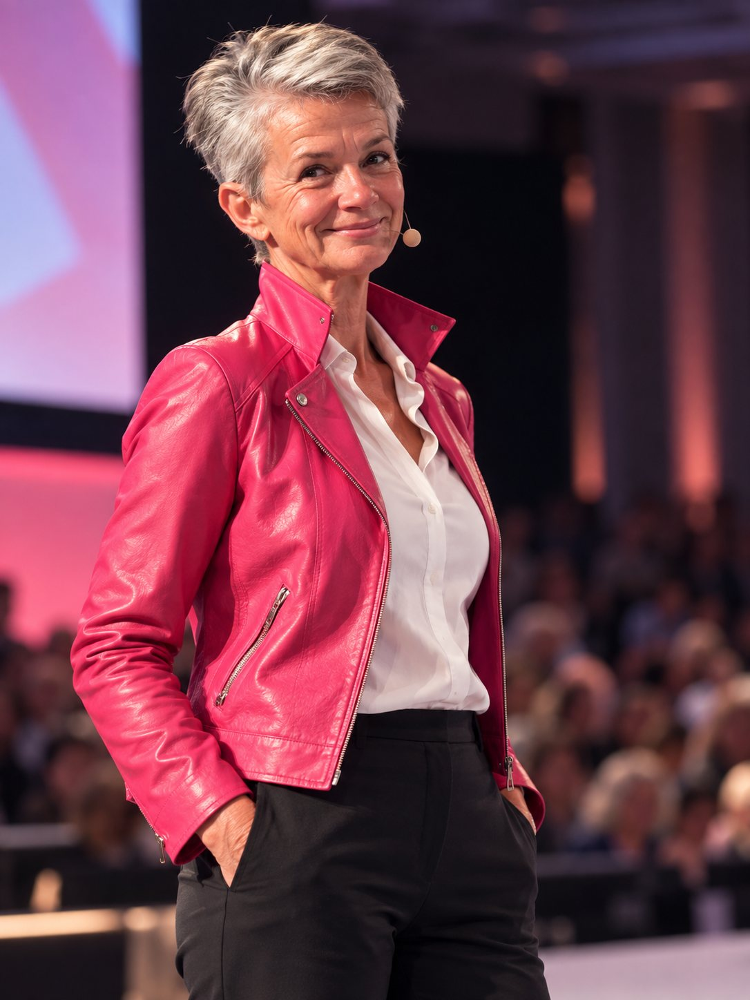
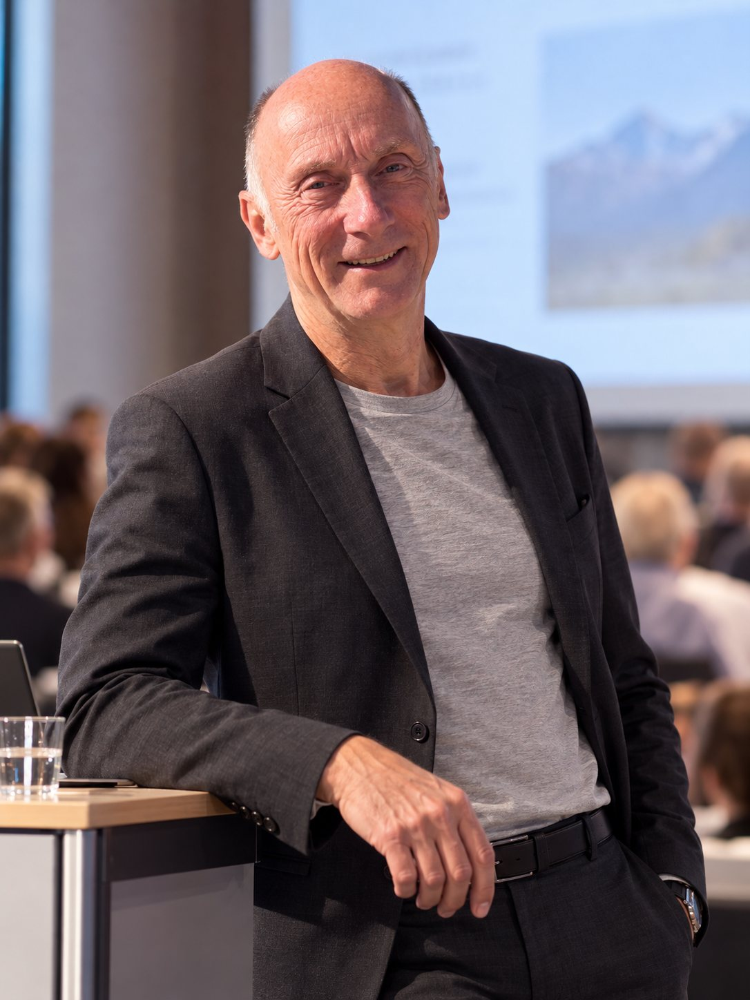
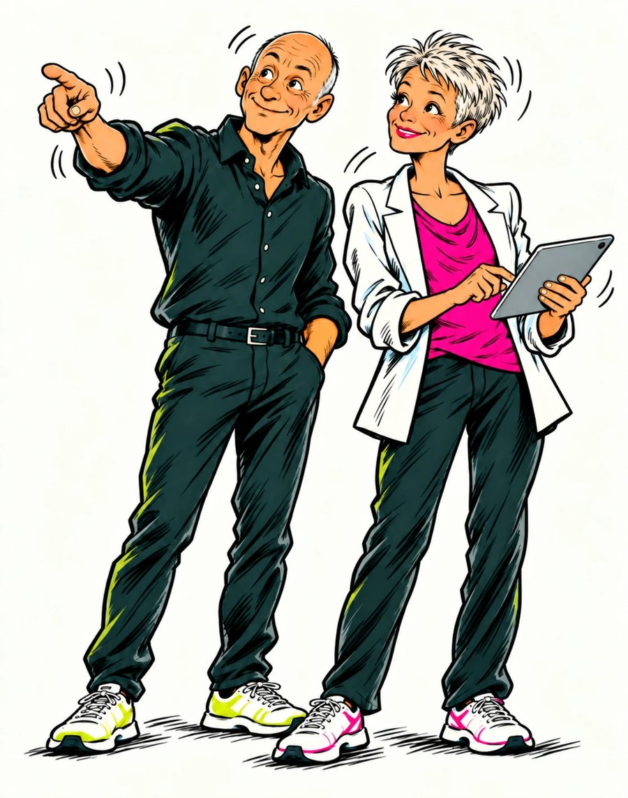
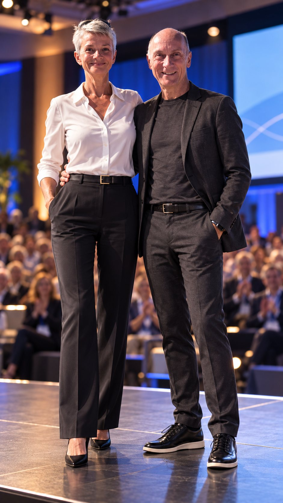

„Das steht doch
irgendwo.“
Informationen liegen in E-Mails, Ordnern und Köpfen. Wer sie braucht, beginnt mit Suchen und Nachfragen.
Weniger Komplexität. Mehr Möglichkeiten.
Wir vereinfachen Abläufe, entwickeln passende digitale Lösungen und setzen KI dort ein, wo sie wirklich Arbeit abnimmt.
Für Teams, die mehr erreichen wollen –
mit weniger Aufwand.


Ralf Westphal, CTOWeniger
suchen.
Mehr machen.
Das geht
auch
einfacher.
KI, die Arbeit
übernimmt.
Kommt Ihnen das bekannt vor?
Informationen liegen in E-Mails, Ordnern und Köpfen. Wer sie braucht, beginnt mit Suchen und Nachfragen.
Dieselben Daten wandern durch mehrere Listen und Programme. Jeder zusätzliche Handgriff kostet Zeit und kann Fehler verursachen.
Erste Versuche sind gemacht. Jetzt soll KI konkrete Aufgaben übernehmen und die tägliche Arbeit spürbar erleichtern.
Wir schauen mit Ihnen hin
Was kann weg?
Was geht einfacher?
Und wo können digitale Werkzeuge und KI Arbeit übernehmen?
Aus unserer Arbeit
Drei Geschichten. Konkrete Veränderungen.
Entdecken Sie den Unterschied.
Mittelständische Tischlerei
Gemeinsam mit den Servicemonteuren und einem internen Mitarbeiter entstand eine App für den Servicealltag.
Formular ausdrucken und mitgeben.
Von Hand ausfüllen und unterschreiben lassen.
Daten übertragen, Rechnung schreiben und versenden.
Alles noch mal
eintippen?
Ein Auftrag.
Ein digitaler Ablauf.
Vom Einsatz
zur Rechnung.
Die App entstand in zwei Tagen konzentrierter gemeinsamer Arbeit. Entscheidend war, die Menschen einzubeziehen, die täglich mit dem Ablauf arbeiten.
Unternehmen mit rund 2.000 Beschäftigten
In rund einem Jahr entwickelte sich eine papierlastige Lohnbuchhaltung zu einer vollständig digitalen Arbeitsweise.
Dokumente auf Papier oder per E-Mail empfangen.
Dokumente aus E-Mails ausdrucken und bearbeiten.
Dokumente in Personalordnern abheften.
Digital rein.
Papier raus?
Papier endet
am Eingang.
KI einsetzen.
Selbst gestalten.
Die Mitarbeitenden nutzen KI inzwischen häufig im Alltag. Wo passende Lösungen fehlten, haben sie eigene kleine GPTs und Apps gebaut.
Selbstständige Immobilien- und Vermögensverwalterin
Über zwei Jahre wurde aus einer Verwaltung voller Papierordner eine vollständig digitale Arbeitsweise.
Dokumente auf Papier erhalten und sammeln.
Unterlagen sortieren und in Ordnern ablegen.
Im Büro die passenden Ordner durchsuchen und Informationen zusammentragen.
Die Information?
Steht im Büro.
Das Büro
kommt mit.
Produktiver.
Zufriedener.
Heute nutzt sie ihr MacBook selbstverständlich und genießt es, alle Informationen überall zur Hand zu haben.
Einmal vor Ort. Alles erledigt.
Weniger Papier. Mehr Möglichkeiten.
Das Büro kommt mit. Die Freiheit auch.
So arbeiten wir
„Wie könnte das
einfacher gehen?“

Wir hören zu und schauen mit den Menschen auf ihre tatsächliche Arbeit. Wo wird gesucht, doppelt gearbeitet oder unnötig gewartet? Wir sprechen die Sprache der Anwender und verstehen die IT dahinter.
Unnötige Schritte und Tools dürfen gehen. Erst danach entwickeln wir passende digitale Lösungen und setzen KI dort ein, wo sie Arbeit abnimmt.
Weglassen ist auch eine Lösung.Wir entwickeln mit den Anwendern, probieren aus und begleiten sie, bis die neue Arbeitsweise im Alltag funktioniert. Damit Ihr Team selbst weiterdenken und gestalten kann.
Produktiver.
Zufriedener.
Sie müssen dafür noch nicht wissen, wie. Die Bereitschaft, gewohnte Abläufe zu hinterfragen, ist ein guter Anfang.
Erfahrung, die mitwächst
Vom kleinen Unternehmen bis zum Konzern: Wir arbeiten mit den Menschen, die ihren Arbeitsalltag verändern wollen.
Schulung zum digitalen Arbeiten und Einführung eines neuen ERP-Systems.
Einführung von digitalem Prozess- und Projektmanagement.
Digitalisierung des Büros und Einführung von KI in der Immobilien- und Vermögensverwaltung.
Digitalisierung der Patientenverwaltung und Abrechnung.
Weniger Verwaltung.
Mehr Zeit fürs Geschäft.
Training zum digitalen Arbeiten für alle Mitarbeitenden.
Vollständige Digitalisierung und KI-Nutzung in der Lohnbuchhaltung.
Digitalisierung vieler Abläufe, Einführung der KI-Nutzung und Entwicklung eigener KI-Lösungen.
KI-Einführung und Schulung.
Weniger Bürokratie.
Mehr Flow.
Einführung des papierlosen Büros in vielen Abteilungen.
Trainings zum effizienten digitalen Arbeiten in fünf Abteilungen.
KI-Einführung in zwei Abteilungen.
Umsetzung des papierlosen Büros in einer Abteilung.
Weniger Umwege.
Mehr Miteinander.
Andrea & Ralf · Work with Ease
Wir kennen die Wünsche und Sorgen von Mitarbeitenden, Führungskräften und Unternehmensinhabern aus eigener Erfahrung – wir waren selbst in jeder dieser Rollen. Gemeinsam finden wir Lösungen, die den Menschen und dem Unternehmen weiterhelfen. Wir verbinden dazu Menschenkenntnis, Prozessverständnis, kreative, pragmatische Lösungsansätze und Softwareentwicklung.

Andrea versteht Menschen und IT. Sie erkennt, wo Abläufe unnötig kompliziert sind, bringt Struktur hinein und findet pragmatische Wege, sie zu vereinfachen.
Digitales interessiert sie seit jeher. Dass man auch ohne Entwicklungskenntnisse eigene Apps bauen kann, hat sie selbst ausprobiert – und umgesetzt.
Ralf kommt aus der Softwareentwicklung, hat eine eigene Softwarefirma aufgebaut und als Softwaretrainer gearbeitet. Neue technische Möglichkeiten entdeckt und erprobt er früh.
Er analysiert, denkt Zusammenhänge durch und entwickelt passende Lösungen. Dazu gehören inzwischen auch viele eigene KI-Anwendungen.
Wir blühen auf, wenn Menschen fragen, ausprobieren und eigene Ideen einbringen. Genau so möchten wir mit Ihnen arbeiten.
Noch eine Frage?
Nein. Wir schauen zuerst gemeinsam auf Ihre Abläufe: Was soll einfacher werden, was kann weg und wo geht heute Zeit verloren? Erst dann entscheiden wir, welche digitalen Werkzeuge oder KI-Anwendungen dazu passen.
Nicht automatisch. Wir prüfen, was sich mit Ihren vorhandenen Werkzeugen verbessern lässt. Neue Software kommt dann ins Spiel, wenn sie eine konkrete Aufgabe besser löst. Unnötige Tools dürfen dabei auch gehen.
Die Menschen, die täglich mit den Abläufen arbeiten, entwickeln die Lösung mit. Wir hören zu, fragen nach und probieren gemeinsam aus. Schulung und Begleitung helfen dabei, die neue Arbeitsweise im Alltag zu verankern.
Nicht mit einer Schulung, sondern mit einem genauen Blick auf Ihre Arbeitsplätze. KI eröffnet so viele Möglichkeiten, dass eine pauschale Antwort unseriös wäre. Und KI passt sich an Ihre Arbeit an, nicht umgekehrt. Deshalb schauen wir zuerst genau hin, wie bei Ihnen heute gearbeitet wird. Dann lassen sich Lösungen finden, die wirklich passen. So gehen wir dabei vor.
Der nächste Schritt ist ein Gespräch.
Erzählen Sie uns, was Sie im Alltag aufhält.
Wir schauen gemeinsam, wo es einfacher gehen kann.
Sie müssen noch keinen fertigen Plan haben.